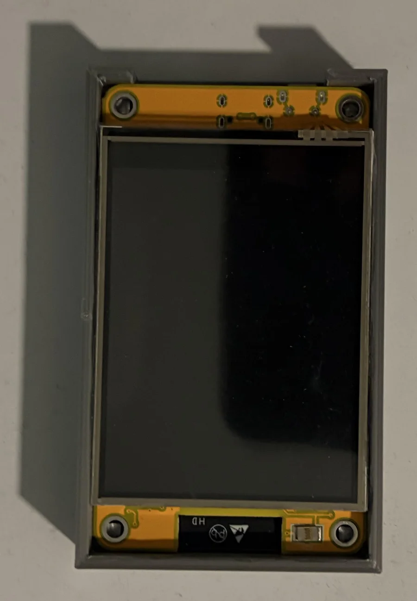
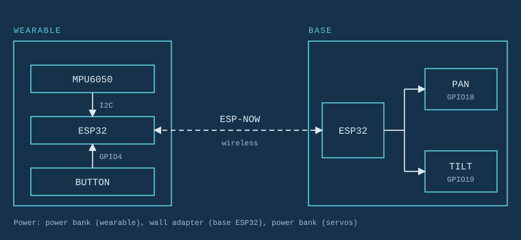

Liam F1 Wind Turbine
Class project with a team of five. We researched, designed, printed, built and tested a Liam F1 turbine under a $100 budget. One-way bearings let us leave out a brake. Includes the final poster.
Read the project →Finished work first, then ideas I plan to build, then the prototype I am still fixing.
Class project with a team of five. We researched, designed, printed, built and tested a Liam F1 turbine under a $100 budget. One-way bearings let us leave out a brake. Includes the final poster.
Read the project →
A touchscreen display that shows album art and the current song, with touch controls. The software follows an existing tutorial, and the page says so up front. I designed and printed the case myself.
Read the project →Two ESP32 boards. A transmitter has six buttons, one for each section of a restaurant floor. A receiver has six timer lights. Pressing a section button starts the matching light. I plan to start with WiFi and MQTT messaging, and fall back to LoRa or nRF24L01+ radios if the range is too long for WiFi.

A wearable controller reads hand tilt and sends it over ESP-NOW to a motorized pan and tilt base. The wireless link and controls work. The first printed base is rough, and the pan servo stalls under the weight of the tilt assembly. I wrote the problems up instead of hiding them. AI was used on this one, and the page explains how.
Read the project →